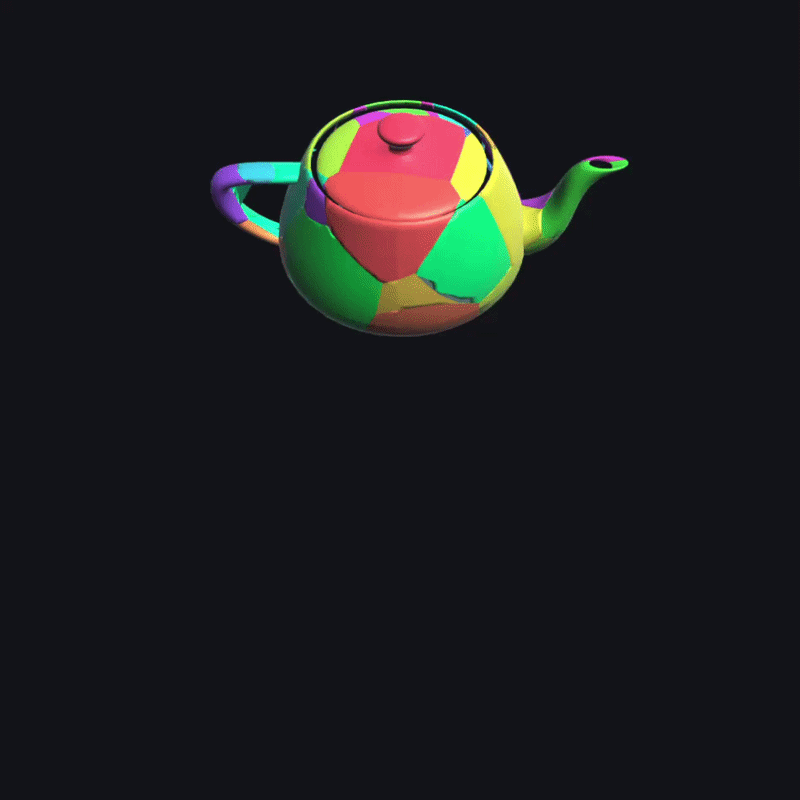
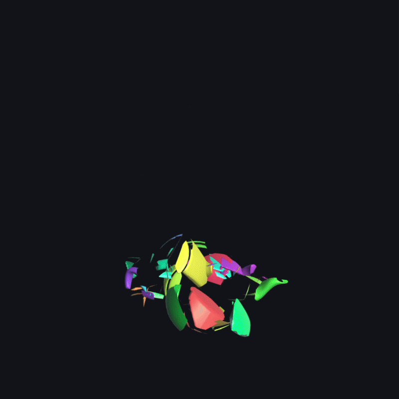
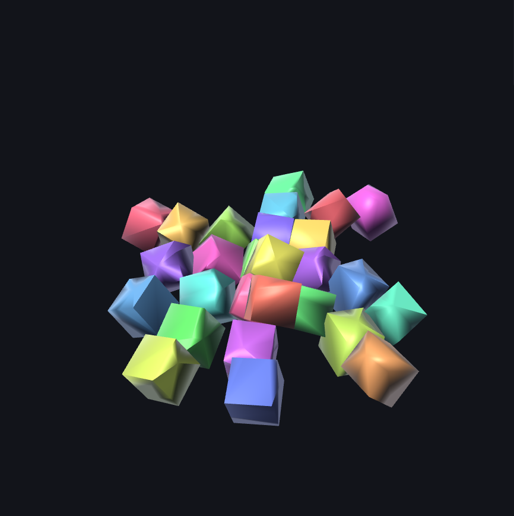
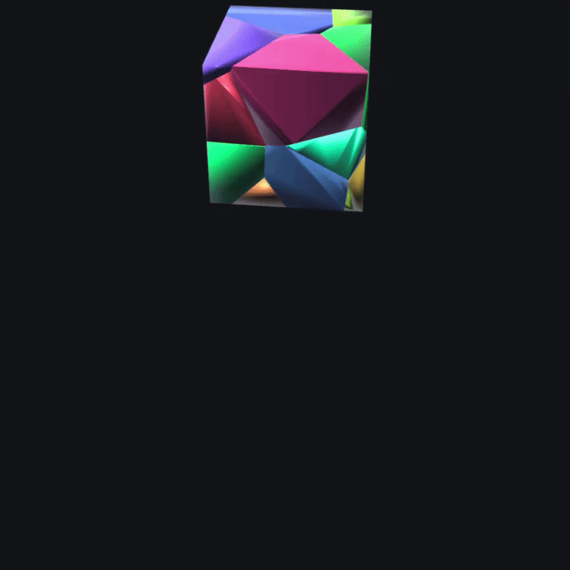
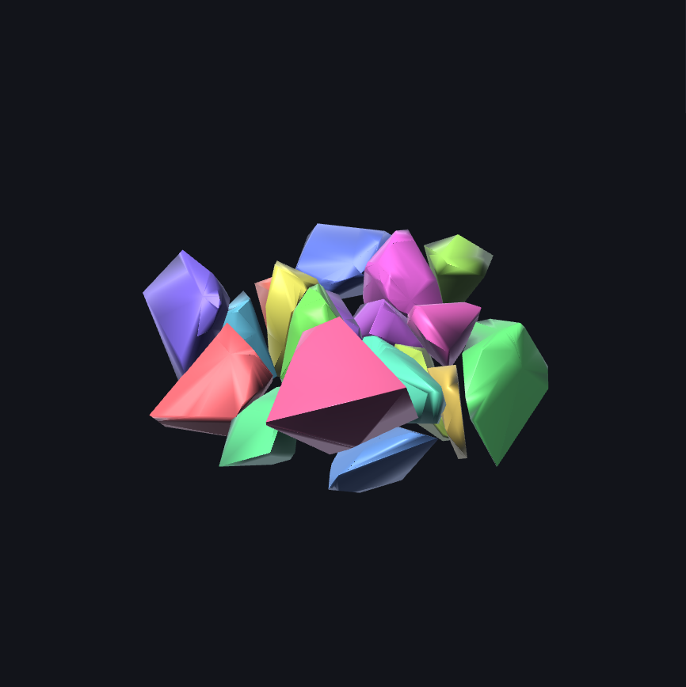

Simulating Destruction with Voronoi Cell Fracturing


Initial Materials:
Abstract
We build an interactive OpenGL-based destruction simulator that fractures closed triangle meshes into smaller fragments and simulates the resulting pieces as rigid bodies in real time. The system supports OBJ mesh loading and provides two fracture modes: a Voronoi-style procedural fracture method for generating irregular, impact-driven fragmentation, and a uniform-grid baseline for comparison. Fracturing is coupled with a rigid-body physics engine that handles linear and angular motion, ground collisions, and fragment-to-fragment interactions under contact constraints and friction. User interaction is supported through click-based impact events that dynamically trigger localized fractures. To enable reproducibility and inspection of simulation behavior, the system records full timestep history and supports scrubbing through simulation states without re-simulation. Together, these components form a physically-driven, interactive pipeline for real-time mesh destruction and animation.
Controls
- Click: Apply impact force / fracture object
- Space: Pause / resume simulation
- R: Reset scene
- Left/Right Arrow: Scrub simulation history
- G: Toggle grid fracture mode
- V: Toggle Voronoi fracture mode
Technical Approach
Mesh clipping
For each triangle, we classify its vertices as inside or outside the cutting plane, and generate new edges wherever triangle edges straddle the plane. We deduplicate cut vertices per unordered edge so that adjacent triangles share identical intersection points, preserving watertightness. Each clipped triangle contributes a segment to the resulting cap, which we then assemble into one or more loops using an adjacency map over segment endpoints. Each loop is fan-triangulated from its centroid, and we verify the winding against the plane normal, flipping it when necessary to ensure consistent orientation and eliminate direction-dependent edge cases.Voronoi Fracture
For each seed points_i, we build the perpendicular bisector plane between s_i and every other seed s_j, oriented so that s_i's side is the "kept" half-space. We then clip the original mesh by every such plane in sequence. The intersection of the kept half-spaces is exactly the Voronoi cell of s_i intersected with the mesh — we never need to build a global 3D Voronoi diagram (no incremental convex-hull construction, no dual graph). Total cost is O(N²) planes in the number of seeds, which is fine for N up to a few hundred. The seeds themselves are sampled uniformly in the mesh's AABB; with the useImpactBias option they're drawn from a Gaussian around the impact point instead, which produces convincingly crater-shaped clusters.
Mass Properties
We compute mass properties using signed tetrahedra integration as described in Mirtich 1996. For each triangle, we form a signed tetrahedron with the origin and accumulate volume, first moments, and second moments across all tetrahedra. We then apply the parallel-axis theorem to shift the inertia tensor from the origin to the center of mass. This yields a closed-form solution valid for any closed mesh, without requiring voxelization or Monte Carlo sampling.Rigid-body Dynamics
We integrate linear motion using semi-implicit Euler and update angular motion using a first-order quaternion derivative followed by unit renormalization. Ground contacts are resolved using per-vertex penetration depth, where we select a single deepest contact per body per step. Body–body contacts are computed by probing vertices in one body against the other body's AABB in its local frame to generate contact points. Normal and tangential impulses are then applied using the standard inertia-aware impulse formulation, with the tangential component clamped to the Coulomb friction cone. We stabilize stacked configurations using Baumgarte-style positional correction.Timestep Scrubbing
At each simulation step, we store each body's(position, orientation) in a ring buffer covering approximately 30 seconds of history. During scrubbing, we restore transforms directly from this buffer rather than re-simulating, and reset velocities to zero. When simulation resumes, the system restarts cleanly from a state of rest.
Problems Encountered & Solutions
One of our most significant hurdles was the persistent jittering of fragments once they settled on the ground. Because we used a single deepest-vertex contact model, fragments would often "micro-bounce" as gravity and the impulse solver fought over the penetration depth at the point of contact.
The Solution: We implemented Baumgarte Stabilization. By adding a bias term to the impulse equation, we allowed the solver to resolve penetrations over several frames rather than instantly. We also introduced a linear and angular velocity "damping" factor that exponentially decays energy when a body is near-rest, which helped the shards finally reach a state of equilibrium.
During Voronoi clipping, planes would occasionally pass through a mesh vertex or edge with near-zero distance. This created "sliver triangles" (extremely thin geometry) that caused the mass-property integrator to produce NaN values, crashing the simulation.
The Solution: We introduced a robust EPSILON threshold for all plane-distance classifications. If a vertex was within \(10^{-5}\) units of the plane, we snapped it to the plane, preventing the creation of degenerate geometry.
Our initial goal was to support full fragment-to-fragment collisions. However, with 40+ fragments, the \(O(N^2)\) pair-tests became too slow for real-time performance on high-poly meshes like the teapot.
The Solution: We prioritized a high-performance AABB broad-phase to cull unnecessary checks and optimized the "vertex-in-body" test by transforming points into the local coordinate space of the target fragment. This maintained 60 FPS even during complex fracture events.
Lessons Learned
- Geometric Robustness: We learned that even a "perfect" physics solver will fail if the underlying mesh isn't watertight. Maintaining topological integrity during clipping is 90% of the battle in a destruction simulation.
- Trade-offs in Real-Time Systems: Interactivity often requires a "close enough" approach. We learned to favor stable, semi-implicit Euler integration and Baumgarte bias over more complex, slow-moving exact solvers.
- The Utility of Debug Tools: Building the Timestep Recorder was originally a "stretch goal," but it became our most vital tool. Being able to scrub back and forth through a crash was the only way we could identify specific geometric edge cases.
- Math in Motion: Seeing Quaternions resolve gimbal lock and Mirtich’s integrals produce accurate centers of mass made abstract linear algebra concepts feel tangible and essential.
Results
Evaluation Framework
To quantify the success of our fracturing and simulation pipeline, we evaluate every destruction event against four key categories of metrics. A "Pass" indicates the simulation is physically plausible and numerically stable.
Fragment Yield: Measures robustness. Ideally, every seed point generates a shard. Yield < 80% suggests the clipper is "eating" small fragments or failing on edge cases.
Volume Conservation: The ultimate test for watertightness. We track total volume post-fracture; deviation indicates holes in the caps or overlapping geometry.
Convexity Ratio: Since Voronoi cells are mathematically convex, any non-convex fragment (Ratio < 100%) reveals a bug in the clipping or capping logic.
Uniformity Score: Defined as \( 1 - \frac{\sigma}{\mu} \). High scores mean "cleaner" splits; lower scores (0.1–0.3) are preferred for Impact Bias to simulate natural debris spread.
Aspect Ratio: Measures fragment "thinness." High values (shards like needles) create "spiking" forces in physics engines and are the leading cause of simulation crashes.
Overlap Error: The total penetration depth at rest. This measures the effectiveness of our Baumgarte Stabilizer in resolving inter-body collisions.
Performance Benchmarks
| Metric | Pass Condition | Technical Justification |
|---|---|---|
| Fragment Yield | ≥ 80% | Prevents "disappearing" mass during high-count fractures. |
| Volume Conservation | 95% – 102% | Ensures the "watertight" capping logic is numerically stable. |
| Convexity Ratio | ≥ 95% | Voronoi geometry is inherently convex; drops indicate clipping bugs. |
| Aspect Ratio | ≤ 4.0 | Needle-like fragments destabilize the impulse-based solver. |
| Settling Time | ≤ 5.0s | Measures the efficiency of friction and restitution damping. |
Quantitative Comparative Analysis
We conducted a controlled test using a standard 1.0m³ cube mesh fractured into 40 segments to compare the geometric and physical properties of the two fracture methods.
Real-Time Fracture Simulation




| Metric | Uniform Grid | Voronoi (Impact) |
|---|---|---|
| Uniformity Score | 99.76% | 39.00% |
| Volume Conservation | 100.00% | 100.00% |
| Settling Time (s) | 3.39s | 3.36s |
| Overlap Error (m) | 0.0333m | 0.0194m |
The contrast in Uniformity Score highlights the core trade-off between procedural generation and artistic control. While the Uniform Grid achieves near-perfect uniformity, it lacks the visual "soul" of destruction. The Voronoi method's lower score reflects its ability to cluster detail at the impact site, creating a more convincing narrative of brittle fracture.
From a physics standpoint, Volume Conservation is our primary metric for stability. Any loss of volume translates to "phantom forces" or fragments falling through each other. Our results demonstrate that even with irregular Voronoi geometry, our MeshClipper maintains watertightness within 1-2% of the original mesh volume, ensuring the rigid-body solver receives accurate mass properties.
Qualitative Analysis


References
- Mirtich, "Fast and Accurate Computation of Polyhedral Mass Properties", Journal of Graphics Tools, 1996.
- Müller et al., "Real Time Dynamic Fracture with Volumetric Approximate Convex Decompositions", SIGGRAPH 2013.
- Baraff & Witkin, "Physically Based Modeling: Rigid Body Simulation", SIGGRAPH 2001 course notes.
- Iñigo Quílez, "Filtered Checkerboard", https://iquilezles.org/articles/checkerfiltering/
Contributions
- Aiden Wang: part of initial proposal webpage, midpoint webpage, collision implementation, fps + fragment count tracker, ability to increase/decrease fragment count in real time
- Ethan Lau: optimizations on the collisions, quantitative metrics, and part of the initial proposal webpage
- Kelly Tou: authored a lot of the initial project foundation, including the build/setup, application structure, rendering pipeline, mesh/fracture infrastructure, rigid-body simulation framework, and the initial docs; also did some performance and stability work, especially in the physics/collision system and Voronoi fracture pipeline
- Sriya Kalyan: milestone video, final project video, final project webpage, final presentation slides